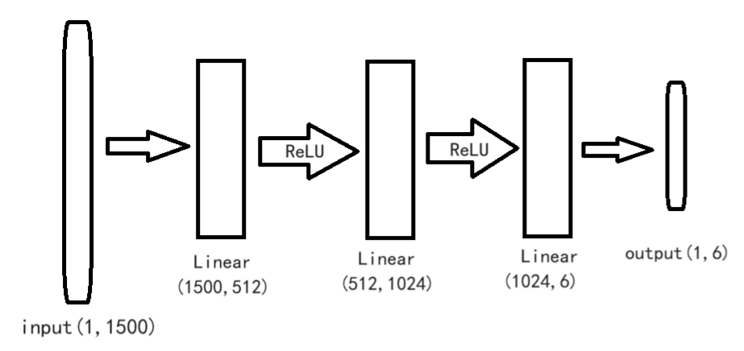

作家风格识别
实验介绍
实验背景
作家风格是作家在作品中表现出来的独特的审美风貌。通过分析作品的写作风格来识别作者这一研究有很多应用，比如可以帮助人们鉴定某些存在争议的文学作品的作者、判断文章是否剽窃他人作品等。
作者识别其实就是一个文本分类的过程，文本分类就是在给定的分类体系下，根据文本的内容自动地确定文本所关联的类别。 写作风格学就是通过统计的方法来分析作者的写作风格，作者的写作风格是其在语言文字表达活动中的个人言语特征，是人格在语言活动中的某种体现。
实验要求
a）建立深度神经网络模型，对文本信息进行检测识别出该文本对应的作者。
b）绘制深度神经网络模型图、绘制并分析学习曲线。
c）用准确率等指标对模型进行评估。
实验环境
可以使用基于 Python 分词库进行文本分词处理，使用 Numpy 库进行相关数值运算，使用 Keras 等框架建立深度学习模型等。
参考资料
实验内容
介绍数据集
该数据集包含了 8438 个经典中国文学作品片段，对应文件分别以作家姓名的首字母大写命名。
数据集中的作品片段分别取自 5 位作家的经典作品，分别是：
| 序号 |
中文名 |
英文名 |
文本片段个数 |
| 1 |
鲁迅 |
LX |
1500 条 |
| 2 |
莫言 |
MY |
2219 条 |
| 3 |
钱钟书 |
QZS |
1419 条 |
| 4 |
王小波 |
WXB |
1300 条 |
| 5 |
张爱玲 |
ZAL |
2000 条 |
- 其中截取的片段长度在 \(100\sim 200\) 个中文字符不等
- 数据集路径为
dataset/ 以作者名字首字母缩写命名
数据集预处理
在做文本挖掘的时候，首先要做的预处理就是分词。
英文单词天然有空格隔开容易按照空格分词，但是也有时候需要把多个单词做为一个分词，比如一些名词如 "New York" ，需要做为一个词看待。
而中文由于没有空格，分词就是一个需要专门去解决的问题了。
这里我们使用 jieba 包进行分词，使用精确模式、全模式和搜索引擎模式进行分词对比。
| # 精确模式分词
titles = [".".join(jb.cut(t, cut_all=False)) for t,_ in dataset.items()]
print("精确模式分词结果:\n",titles[0])
# 全模式分词
titles = [".".join(jb.cut(t, cut_all=True)) for t,_ in dataset.items()]
print("全模式分词结果:\n",titles[0])
# 搜索引擎模式分词
titles = [".".join(jb.cut_for_search(t)) for t,_ in dataset.items()]
print("搜索引擎模式分词结果:\n",titles[0])
|
| 精确模式分词结果:
几个.少年.辛苦.奔走.了.十多年.，.暗地里.一颗.弹丸.要.了.他.的.性命.；.几个.少年.一击.不.中.，.在.监牢.里.身受.一个多月.的.苦刑.；.几个.少年.怀着.远志.，.忽然.踪影.全无.，.连.尸首.也.不知.那里.去.了.。.—.—.“.他们.都.在.社会.的.冷笑.恶骂.迫害.倾陷.里.过.了.一生.；.现在.他们.的.坟墓.也.早.在.忘却.里.渐渐.平.塌下去.了.。.
全模式分词结果:
几个.少年.辛苦.奔走.了.十多.十多年.多年.，.暗地.暗地里.地里.一颗.弹丸.要.了.他.的.性命.；.几个.少年.一.击.不中.，.在.监牢.里.身受.一个.一个多.一个多月.多月.的.苦刑.；.几个.少年.怀着.远志.，.忽然.踪影.全.无.，.连.尸首.也.不知.那里.去.了.。——“.他们.都.在.社会.的.冷笑.恶骂.迫害.倾陷.里.过.了.一生.；.现在.他们.的.坟墓.也.早在.忘却.里.渐渐.平.塌下.塌下去.下去.了.。.
.
搜索引擎模式分词结果:
几个.少年.辛苦.奔走.了.十多.多年.十多年.，.暗地.地里.暗地里.一颗.弹丸.要.了.他.的.性命.；.几个.少年.一击.不.中.，.在.监牢.里.身受.一个.多月.一个多.一个多月.的.苦刑.；.几个.少年.怀着.远志.，.忽然.踪影.全无.，.连.尸首.也.不知.那里.去.了.。.—.—.“.他们.都.在.社会.的.冷笑.恶骂.迫害.倾陷.里.过.了.一生.；.现在.他们.的.坟墓.也.早.在.忘却.里.渐渐.平.塌下.下去.塌下去.了.。.
|
使用 TF-IDF 算法统计各个作品的关键词频率：TF-IDF（term frequency–inverse document frequency，词频-逆向文件频率）是一种用于信息检索与文本挖掘的常用加权技术。
- TF-IDF是一种统计方法，用以评估一字词对于一个文件集或一个语料库中的其中一份文件的重要程度。
字词的重要性随着它在文件中出现的次数成正比增加，但同时会随着它在语料库中出现的频率成反比下降。
- TF-IDF的主要思想是：如果某个单词在一篇文章中出现的频率TF高，并且在其他文章中很少出现，则认为此词或者短语具有很好的类别区分能力，适合用来分类。
这里我们使用 jieba 中的默认语料库来进行关键词抽取，并展示鲁迅的前 5 个关键词，输出结果为：
| LX :
阿Q 0.05379690966906414
没有 0.03501956188388567
一个 0.02659384736489112
知道 0.026370791166196325
什么 0.026117200927953624
|
模型训练
此处，我分别选取了决策树模型，和基于pytorch的神经网络模型进行训练。
基于pytorch的神经网络
通过 Pytorch 构建深度学习模型的步骤如下：
- 准备数据，构建Dataset
- 定义模型、损失函数和优化器
- 迭代训练，进行反向传播和梯度下降
- 模型保存和测试评估
模型核心建立思路：
- 取每个作者的前 300 个最高词频的词作为特征
- 单独计算每个作者每句话的这 1500 维特征，以此训练神经网络
采取的神经网络结构如下：

以下是训练代码：
| import os
import numpy as np
import jieba as jb
import jieba.analyse
import torch
import torch.nn as nn
from torch.utils import data
device = torch.device('cpu')
int2author = ['LX', 'MY', 'QZS', 'WXB', 'ZAL']
author_num = len(int2author)
author2int = {author: i for i, author in enumerate(int2author)}
# dataset = {(sentence, label), }
dataset_init = []
path = 'dataset/'
for file in os.listdir(path):
if not os.path.isdir(file) and not file[0] == '.':
# 跳过隐藏文件和文件夹
# 打开文件
with open(os.path.join(path, file), 'r', encoding='UTF-8') as f:
for line in f.readlines():
dataset_init.append((line, author2int[file[:-4]]))
# 将片段组合在一起后进行词频统计
str_full = ['' for _ in range(author_num)]
for sentence, label in dataset_init:
str_full[label] += sentence
# 词频特征统计，取出各个作家前 300 的词
words = set()
for label, text in enumerate(str_full):
for word in jb.analyse.extract_tags(text, topK=300, withWeight=False):
words.add(word)
int2word = list(words)
word_num = len(int2word)
word2int = {word: i for i, word in enumerate(int2word)}
features = torch.zeros((len(dataset_init), word_num))
labels = torch.zeros(len(dataset_init))
for i, (sentence, author_idx) in enumerate(dataset_init):
feature = torch.zeros(word_num, dtype=torch.float)
for word in jb.lcut(sentence):
if word in words:
feature[word2int[word]] += 1
if feature.sum():
feature /= feature.sum()
features[i] = feature
labels[i] = author_idx
else:
labels[i] = 5 # 表示识别不了作者
dataset = data.TensorDataset(features, labels)
# 划分数据集
valid_split = 0.3
train_size = int((1 - valid_split) * len(dataset))
valid_size = len(dataset) - train_size
train_dataset, test_dataset = torch.utils.data.random_split(dataset, [train_size, valid_size])
# 创建一个 DataLoader 对象
train_loader = data.DataLoader(train_dataset, batch_size=32, shuffle=True)
valid_loader = data.DataLoader(test_dataset, batch_size=1000, shuffle=True)
model = nn.Sequential(
nn.Linear(word_num, 512),
nn.ReLU(),
nn.Linear(512, 1024),
nn.ReLU(),
nn.Linear(1024, 6),
).to(device)
loss_fn = nn.CrossEntropyLoss()
optimizer = torch.optim.Adam(model.parameters(), lr=1e-4)
best_acc = 0
best_model = model.cpu().state_dict().copy()
for epoch in range(40):
for step, (b_x, b_y) in enumerate(train_loader):
b_x = b_x.to(device)
b_y = b_y.to(device)
out = model(b_x)
loss = loss_fn(out, b_y.long())
optimizer.zero_grad()
loss.backward()
optimizer.step()
train_acc = np.mean((torch.argmax(out, 1) == b_y).cpu().numpy())
with torch.no_grad():
for b_x, b_y in valid_loader:
b_x = b_x.to(device)
b_y = b_y.to(device)
out = model(b_x)
valid_acc = np.mean((torch.argmax(out, 1) == b_y).cpu().numpy())
if valid_acc > best_acc:
best_acc = valid_acc
best_model = model.cpu().state_dict().copy()
print('epoch:%d | valid_acc:%.4f' % (epoch, valid_acc))
print('best accuracy:%.4f' % (best_acc, ))
torch.save({
'word2int': word2int,
'int2author': int2author,
'model': best_model,
}, 'results/my_model.pth')
|
选取accuracy和loss，将训练过程可视化，此时的epoch为20：

提交测试，正确率只有43/50：

从training loss图像和accuracy图像可以发现，模型并没有很好的收敛，所以将epoch增加到40，重新训练;

提交测试，正确率提高到47/50：

决策树
决策树模型在作家风格识别方面具有一些优势，这些优势包括：
- 可解释性强： 决策树的结构清晰，易于理解和解释。每个节点代表一个特征的判断，每个分支代表一个可能的决策。这种可解释性有助于了解哪些特征对于作家风格的识别起到了关键作用。
- 处理混合特征： 作家风格可能涉及多个方面，如词汇选择、句子结构、修辞手法等。决策树能够处理混合类型的特征，包括离散和连续型特征，使其适用于不同类型的文本数据。
- 对缺失数据的鲁棒性： 决策树对于缺失数据的处理相对较为鲁棒。在训练过程中，即使某些特征值缺失，模型仍然可以进行判断，并选择最优的分支。
- 非参数性： 决策树是一种非参数模型，不对数据的分布做出强烈的假设。这使得它在处理不同类型的文本数据时更加灵活。
- 容易处理大规模数据： 决策树的训练和预测速度相对较快，使其能够有效地处理大规模的文本数据。
- 特征选择： 决策树模型可以自动选择重要的特征，从而减少特征空间的维度，提高模型的泛化能力。
针对于本次实验，我们借鉴了随机森林的设计原理，取出各个作家前 200 的词，为每一个作者都训练了一个SVM：
以下是训练代码：
| import os
import jieba as jb
import jieba.analyse
import numpy as np
import pickle
import time
from sklearn.model_selection import train_test_split
from sklearn.svm import SVC
int2author = ['LX', 'MY', 'QZS', 'WXB', 'ZAL']
author_num = len(int2author)
author2int = {author: i for i, author in enumerate(int2author)}
# dataset = {(sentence, label), }
dataset_init = []
path = 'dataset/'
for file in os.listdir(path):
if not os.path.isdir(file) and not file[0] == '.': # 跳过隐藏文件和文件夹
with open(os.path.join(path, file), 'r', encoding='UTF-8') as f: # 打开文件
for line in f.readlines():
dataset_init.append((line, author2int[file[:-4]]))
# 将片段组合在一起后进行词频统计
str_full = ['' for _ in range(author_num)]
for sentence, label in dataset_init:
str_full[label] += sentence
# 词频特征统计，取出各个作家前 200 的词
words = set()
for label, text in enumerate(str_full):
for word in jb.analyse.extract_tags(text, topK=200, withWeight=False):
words.add(word)
int2word = list(words)
word_num = len(int2word)
word2int = {word: i for i, word in enumerate(int2word)}
features = np.zeros((len(dataset_init), word_num))
labels = np.zeros(len(dataset_init))
for i, (sentence, author_idx) in enumerate(dataset_init):
feature = np.zeros(word_num, dtype=np.float)
for word in jb.lcut(sentence):
if word in words:
feature[word2int[word]] += 1
if feature.sum():
feature /= feature.sum()
features[i] = feature
labels[i] = author_idx
else:
labels[i] = 5 # 表示识别不了作者
X_train, X_test, y_train, y_test = train_test_split(features, labels, test_size=0.1)
# 为每个作家训练一个 svm，效果更好
start = time.time()
svm_lst = []
for i in range(author_num):
svm_i = SVC(probability=True)
y_train_i = [1 if j == i else 0 for j in y_train]
y_test_i = [1 if j == i else 0 for j in y_test]
print('training svm for', int2author[i])
svm_i.fit(X_train, y_train_i)
print('score:', svm_i.score(X_test, y_test_i))
svm_lst.append(svm_i)
end = time.time()
print('Fitting time: {:.2f} s'.format(end - start))
start = end
with open('results/svm_model.pkl', 'wb') as f:
pickle.dump((int2author, word2int, svm_lst), f)
print('saved model!')
|
提交结果如下：

心得与反思
本次实验，我分别选取了SVM和基于pytorch的神经网络模型来识别作家风格。相比于pytorch，SVM的可解释性更强，但是在本次实验中，发现效果并不如基于pytorch设计的神经网络。原因可能有如下几点：
- 复杂的特征表达： 作家风格通常涉及到语法、词汇选择、句子结构等复杂的语言特征。神经网络能够学习更高级、非线性的特征表达，适用于这种复杂性。
- 上下文依赖性： 神经网络能够捕捉长距离的上下文依赖关系，而这在作家风格中可能是重要的，因为某个词的使用可能受到文本中其他位置的影响。
- 端到端学习： 神经网络可以进行端到端的学习，无需手动提取特征。这对于作家风格识别这样的任务来说，有助于模型更好地从原始文本数据中学习有用的表示。
- 迁移学习： 神经网络在迁移学习方面有优势，可以通过在大规模文本任务上进行预训练，然后微调到作家风格识别任务上，从而提高性能。
具体到pytorch神经网络的调参，最重要的调整是增加了分词数目，并取得了更好的效果。进一步分析，增加特征词的数目可以提供更多的上下文信息，使得模型能够更好地理解输入的语境。此外，增加特征词数目有助于提供更全面的信息，特别是在处理较大的语料库时。这有助于防止信息的丢失和模型的过拟合，使得模型能够更好地泛化到不同的数据。基于此，这种优化方式是合理的。